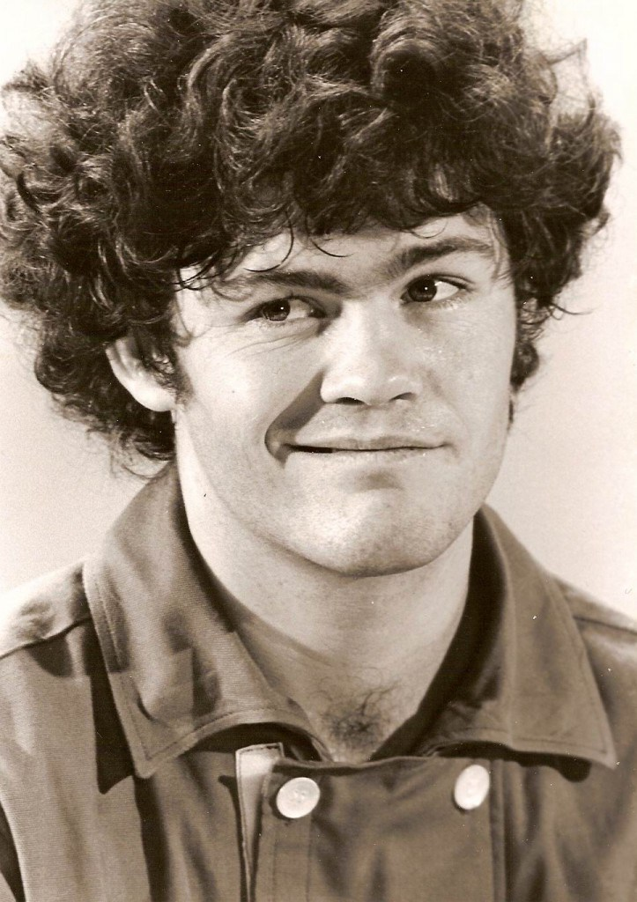
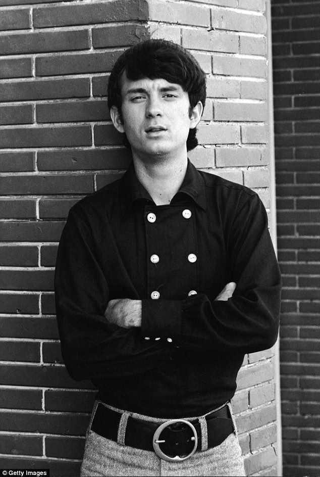
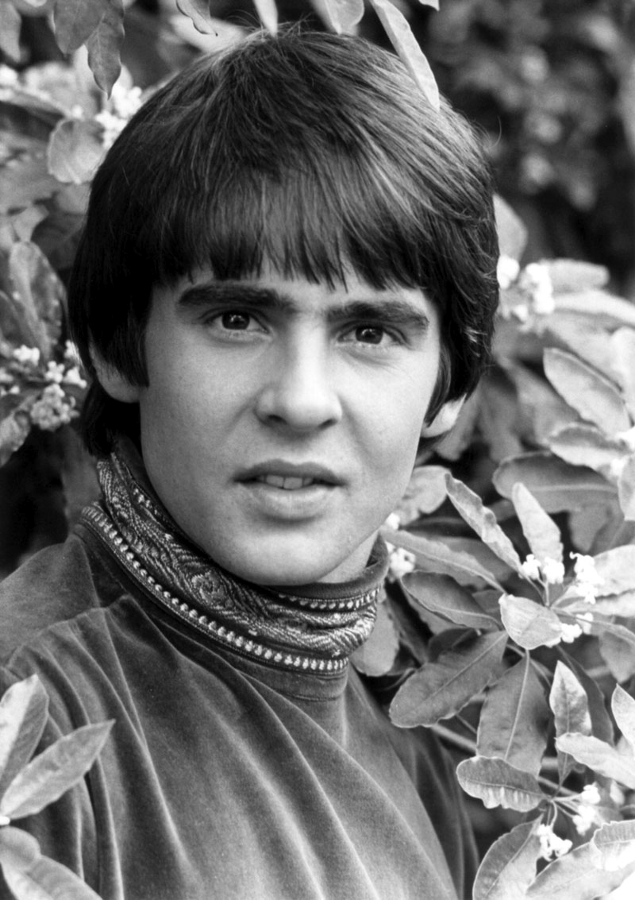

About Us
Background
The Monkees are an American rock and pop band originally active between 1966 and 1971, with reunion albums and tours in the decades that followed. Their original line-up consisted of the American actor/musicians Micky Dolenz, Michael Nesmith, and Peter Tork with English actor/singer Davy Jones. The group was conceived in 1965 by television producers Bob Rafelson and Bert Schneider specifically for the situation comedy series The Monkees, which aired from 1966 to 1968. The band's music was initially supervised by record producer Don Kirshner, backed by the songwriting duo of Tommy Boyce and Bobby Hart.
Meet the Band
Micky Dolenz

Instruments:
Vocals, Drums
Member Since:
1965
Home Town:
Los Angeles, California
Birthday:
8 March 1945
In 1965, Dolenz was cast in the television sitcom The Monkees and became the drummer and a lead vocalist in the band created for the show. He was not actually a drummer and needed lessons even to be able to mime credibly, but eventually was taught how
to play properly. By the time The Monkees went on tour in late 1966, Dolenz was competent enough to play the drums himself. He learned to play right-handed and left-footed because of a leg disease called Perthes
making his right leg weak.
Michael Newsmith

Instruments:
Vocals, Guitar
Member Since:
1965
Home Town:
Houston, Texas
Birthday:
30 December 1942
From 1965 to early 1970, Nesmith was a member of the television pop-rock band The Monkees, created for the television situation comedy of the same name. Nesmith won his role largely by appearing nonchalant when he auditioned. He rode his motorcycle to
the audition, and wore a wool hat to keep his hair out of his eyes; producers Bob Rafelson and Bert Schneider remembered the "wool hat" guy, and called Nesmith back.
Davy Jones

Instruments:
Vocals
Member Since:
1966
Home Town:
Openshaw, Manchester, England
Birthday:
30 December 1945
From 1966 to 1971, Jones was a member of the Monkees, a pop-rock group formed expressly for a television show of the same name. With Screen Gems producing the series, Jones was shortlisted for auditions, as he was the only Monkee who was signed to a deal
with the studio, but still had to meet producers Bob Rafelson's and Bert Schneider's standards. Jones sang lead vocals on many of the Monkees' recordings, including "I Wanna Be Free" and "Daydream Believer".
The DVD release of the first season of the show contained commentary from the various bandmates. In Peter Tork's commentary, he stated that Jones was a good drummer and had the live performance lineups been
based solely on playing ability, it should have been Tork on guitar, Mike Nesmith on bass, and Jones on drums, with Micky Dolenz taking the fronting role, rather than as it was done (with Nesmith on guitar,
Tork on bass, and Dolenz on drums). Mostly playing tambourine or maracas, Jones filled in briefly for Tork on bass when he played keyboards.
Peter Tork

Instruments:
Vocals, Drums
Member Since:
1966
Home Town:
Washington, D.C.
Birthday:
13 February 1942
Tork was a proficient musician before he joined The Monkees, and though other members of the group were not allowed to play their own instruments on their first two albums, he had played what he described as "third chair guitar" on Michael Nesmith's song
"Papa Gene's Blues" on their first album. He subsequently played keyboards, bass guitar, banjo, harpsichord, and other instruments on their recordings. He co-wrote, along with Joey Richards, the closing theme
song of the second season of The Monkees, "For Pete's Sake". On the show, he was relegated to acting as the "lovable dummy", a persona Tork had developed as a folk singer in New York's Greenwich Village.